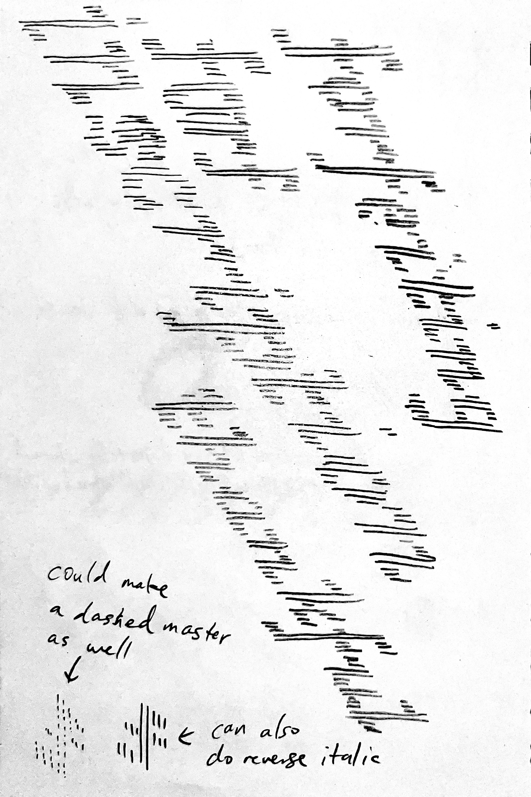
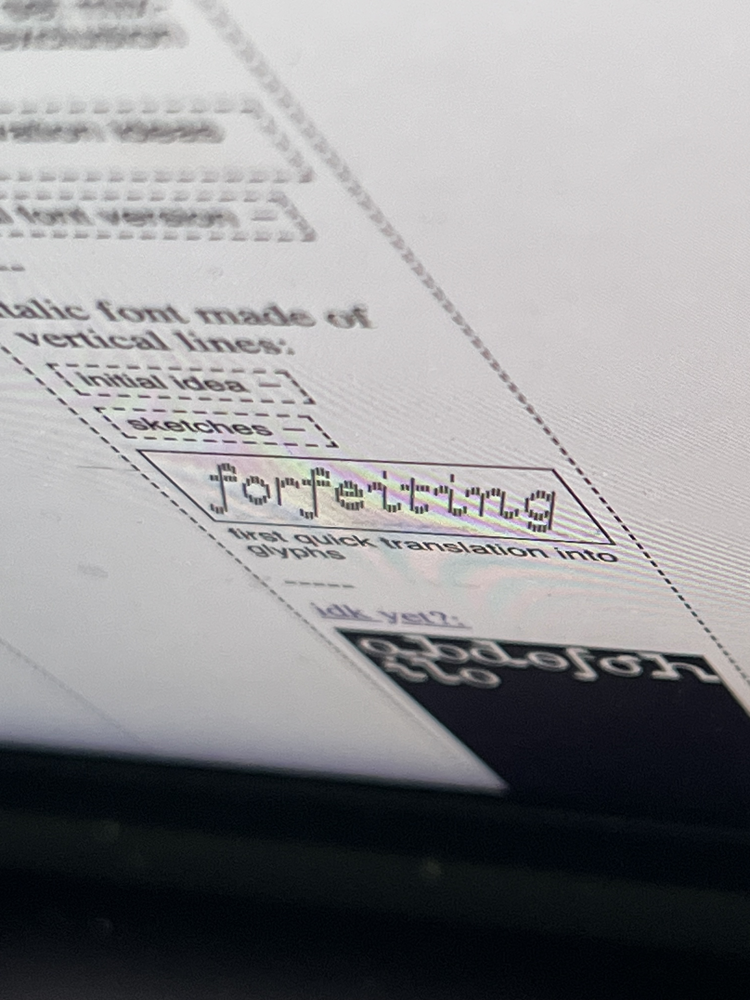
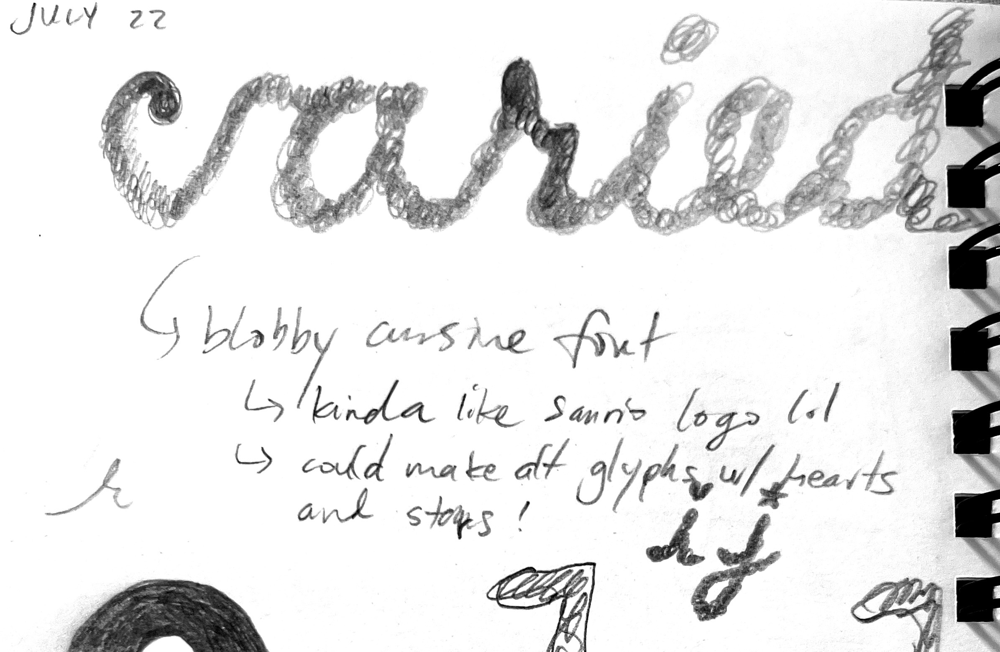
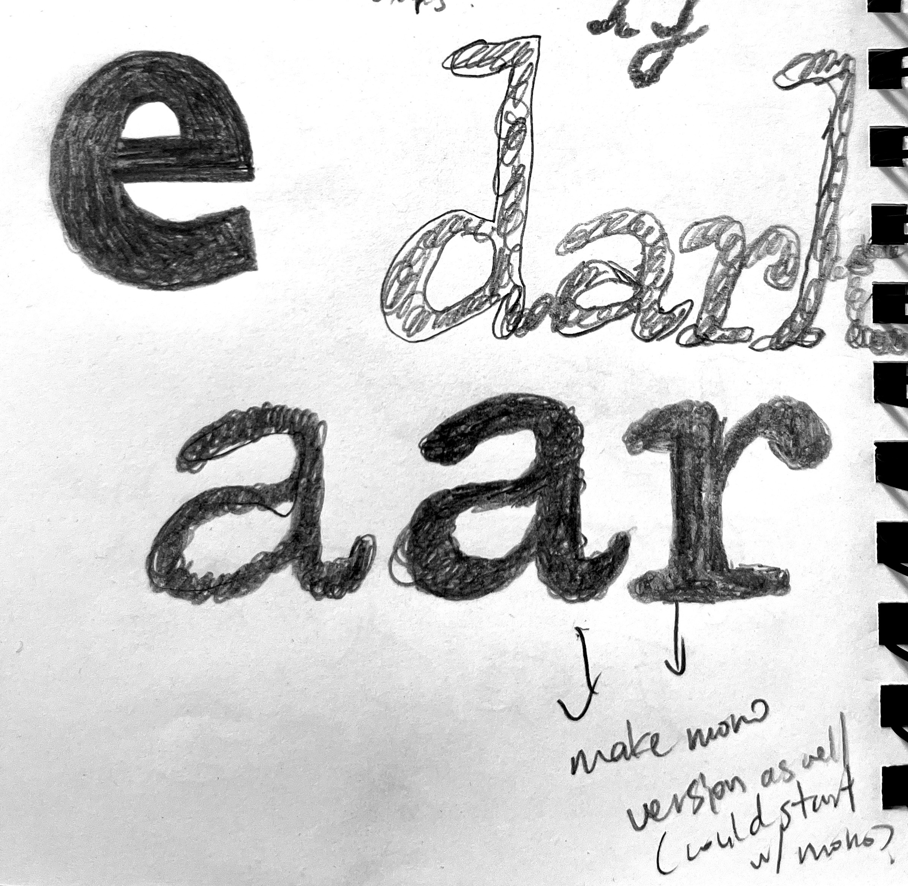
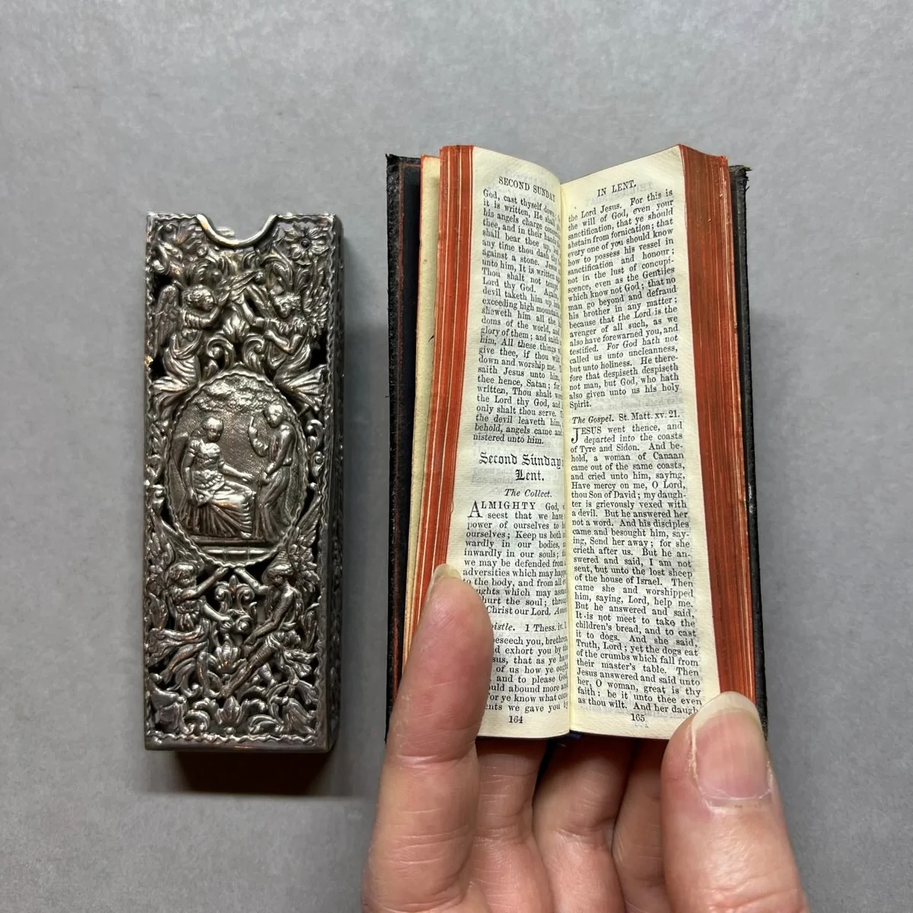

here are my thingz.
i make my thingz for fun.
i make my thingz to feel inspired.
i make my thingz to explore.
my thingz document my learning.
my thingz show my interests.
my thingz are in progress.
my thingz might have typoz.
my thingz are not just references to other things/z.
i make thingz because i miss making thingz.
this site is one of my thingz too.
thx for taking a look around at my thingz.
—christine xia (project started in may 2026, ongoing)
thingz 1: this site
- an evolution of my interactive media: web class archive
- need to fix how things are laggy whenever the recollection iframe gets resized—likely because of the transition-duration stuff that happens when you resize the actual site—THIS IS SO HARD. trying to detect when window is being resized to toggle class, but only finding ways to add/remove once after the first window resize or associating with specific window sizes FIXED IT! doing addClass for a class that sets the transition-duration to 0 on window resize wasn’t working at first since it completely removes the blur transition, but removing the class on click brings it back!
- lower priority fix: the dashed border/outline on mobile. on desktop i’m using a 0.5px border to resolve the fact that using a 1px outline displays weirdly once i expand one of the columns (all the columns on the right no longer have visible outlines). however, on mobile the 0.5px border doesn’t render so i’ve opted to use a 1px outline for now. do i make the outline work better on desktop and mobile? if i do i’d have to stick with the longer line length of dashes instead of the current short length. i just used border-right and have no border on the last column (been tryna avoid needing to add “first”/“last” classes in html to things to format stuff but will accept it this time)
- lower priority design update: toggle button text on click (swtich between + and - to reflect the collapsed/expanded state of the text below) done! did it with spans inside the buttons and toggling display on click/hover
- it has honestly been so fun document my work and progress/process like this
- being able to have a visual collection that i can watch change and grow is quite rewarding
- even if something isn’t done and presenting it anyway and being less precious about it feels freeing
- plus this feels like a really true representation of how i think, collect, and connect things (thingz) together
- <3
thingz 2: fontz
- feels like low-fidelity/resolution is on my mind rn with recollection, fantasymart, and my pixel font idea
- maybe there can be more of an overarching idea to this body of work that originally felt more like curiosity and exploration of just form
- abstracting, obscuring, and finding something new in it
- recollection feels more melancholic and fantasymart is more playful/joyful
-----
- making fonts à la rave in berlin 1100
- dot matrix serif font where the size of the dots are bigger and smaller to create contrast (inkblot matrix). the idea came to me while i was half asleep in the middle of the night
- hovering to increase the dots came from just being curious about trying it out and was quick and easy to try it out
- the blurring came initially from just needing to check the optical weight of the letterforms without needing to squint constantly (was getting a headache), then added the contrast/thresholding after when playing around with css filters
- switch from zoom to transform: scale() for the text size (more reliable and less laggy across devices + the scaling/rounding of the dot edges will look better too)
- remove rows of empty dots and replace with a margin-top so that the empty spaces don’t block .dot:hover for other letters
- maybe: make a reset button
- maybe: add a typing cursor, maybe allows you to put the cursor anywhere and backspace from that position? once i can place the cursor based on where you click then backspacing should be easy by using .previous(). cursor placement can probably have you click on a .letter and it places the cursor before()
- eventually make a non-typing specimen page? that could be the main page and this typing one is secondary. that way i can lead with a nicer-looking specimen page lol. can still be interactive! i’ll need to think about how to build it to achieve different scales since zoom is so unreliable. could it be using iframes of html files that have a different rem font size? or could it just be selecting children() (the .dots) of each section and changing the size there somehow? idk
- full page here
- wanna make something that is less interactive (no typing) and shows the font at different scales with the different styles
- gonna try out the series of iframes embedded in one another and set mix-blend-mode to exclusion or something (currently removed the loop because of the lag so you need to refresh to reset it)
- it’s generally pretty laggy and not really doing much to show off the font so will prob pivot to something where you just scroll through different blocks with different typesetting for the different styles
- took screenshots/screen recordings throughout the process; below is a bunch of them in chronological order
- what isn’t apparent through the images and videos is my progress on manually coding a keyboard/text box for this interactive specimen. because i was just drawing letters using divs, i spent an excruciating amount of time doing that with javascript/jQuery (see here)
- initial roughed in alphabet, testing blur effect, changing type size by changing the * font-size
- one of the things i haven’t been able to figure out so far is getting different quote marks to appear depending on whether it’s at the start or end of a word (i spent a loooong time failing to figure this out)
- cool glitches when trying to do interactive stuff with the dots
- finally made a version of the g that started feeling cool; was pretty happy with how much nuance i could get with the smaller details of the letter
- reversed things back to black on white
- added a short description to the page so the site could be a more standalone artifact
- i wanted to width of the M to stay as is but that meant it was an even number and it was tough to get the point in the centre feeling sharp enough while having the overall shape feel symmetrical
- comparing my progress since 2026.06.20 using both the display and text spacing. at this point, i’ve created buttons to select the different styles
- really debating on how to shape the a and figuring out how the bowls connect to the stems on the b and p
- i thought about removing the smaller dots along all the vertical stems to clean things up a bit so i took a screenshot and saved a separate HTML and CSS file before doing so
- i took the screenshot and manually erased the dots in photoshop to get a preview of what it would look like before committing to it. i think this was the first time i worked on this font not strictly in HTML/CSS/JS
- i ended up removing all the dots pretty much to exactly what the edited screenshot looks like but as of when i am currently writing this (2026.08.14) i feel like i may need to bring the dots back to balance the weight of the stems with the curved letters and to bring back a bit more contrast to the font overall
- cool glitches when i was trying to add a larger “bounding box” to the dots for hovering
- fun colour glitch when adjusting my blend modes for the non-typing specimen


2026.06.16

2026.06.17

2026.06.20

2026.06.22

2026.06.29

2026.06.30

2026.06.30
2026.07.01

2026.07.03

2026.07.08 (before)

2026.07.08 (after)

2026.07.14 (comparing display)

2026.07.14 (comparing text)

2026.07.14

2026.07.16 (unedited)

2026.07.16 (edited, less dots)


2026.07.18


2026.07.19


2026.07.20

2026.07.22
- maybe: activate with a gesture, can display on portable 3:4 tv screen i have to add more softness + texture? the smaller supporting type could be a pixel font that aligns with the resolution of the screen
- pretty sure: could also make a narrative type specimen (zine)? would be great to contrast the display size with tiny pencil handwriting/illustrations
- make a proper font (as software, in glyphs) and have the regular weight be sharp and the bold/blur weight soft/blob-y/bleed-y
- regular (text), regular (display), blur (text), blur (display), and then the condensed versions for all that too lol
- could have a bunch of different alt glyphs/sets because of how ambiguous the dot matrix is (see below)
- overall so far i think i’ll need to add a bit more softness, be less mechanical
- i like the R a lot and i think it’s because there’s a bit more curve on the leg and the bowl kicks upwards on the bottom left

initial *SUPER ROUGH* sketch / Book Text

*REALLY ROUGH* sketches of glyph sets / Book Text
-----
FantasyMart:
- italic font made of vertical lines:
- i think the idea sparked from when i was sketching my dot matrix font with a pencil (i had been on week 3 of chipping away at the dot matrix font) and was using swirling scribbles to do so. as i was drawing i started to skew the round scribbles into angled zigzags to create letterforms
- in the sketches below, you can see how my drawing of “inscription” progresses from rounder scribbles into sharper ones



initial analog sketches

2026.07.22 first quick translation into glyphs

quick look at how the upright version might look (haha)
- initial sketch of full alphabet with different slant angles (my first time making a variable font so need to really focus on cleaning up the masters)

italic

stretch italic

regular

retalic
- other than the slant, i can explore some other axes:
- width (change the spacing between lines)
- weight (change the weight of the lines)
- height (change the length of the lines; this one can have a couple options—one where you can stretch the full height including the horizontal bars and one where the horizontal bars stay the same height)
- view specimen page here
- now up to 7 masters
- the spacing for everything other than the regular style is super off; currently working on properly drawing everything between the masters for the right interpolation
- i ended up taking a full day to create components and rebuilding the glyphs with them so that it would be easier to adjust the how the curves look between the different slants (rather than just letting everything shear)
- still in progress—i’m moving down alphabetically and have gotten to lowercase q so far (so just around halfway done)
- should be faster as i go since i’ve already cleaned up a lot of the components?
- the stem ones are pretty useless, i ended up just decomposing them so that the lengths can all be adjusted between masters and remove overlaps

regular

italic

italic extreme

retalic

retalic extreme

heavy

expanded

my components
2026.08.08 testing in dinamo font gauntlet
- view specimen page here
- after (mostly) cleaning up my masters, i threw my latest update into the dinamo font gauntlet
- the drawings of the glyphs are all in a pretty good spot and the kerning is mostly ok but definitely still need to fix the expanded version since i just batch multiplied all the kerning pair values from the regular master
- the exported instances are below; i made the weights slightly different based on the angle (more angled = lighter line weight because the skewing makes the line gaps tighter). could prob still make the extreme italic/retalic a touch lighter
- kinda funny how it feels like your vision is blurred when looking at the regular weight versions below with the more slanted styles feeling softer, like they have motion blur applied
- next steps will be to work on the kerning for the expanded width and to build out more glyphs (mainly punctuation since i only have a period, comma, and hyphen right now)
- need to make more ligatures (already made fl but need more for th, ih, etc.)
- looking at the exported instances there are some slightly misaligned things so will need to double check my masters (prob just the heavy or expanded ones)
- there are also some weird slivers and gaps in the heavy weights so need to test and refine those
- i also need to explore the software more to make the variable export work better (some glitches with the axis scales and also would like to cap the weights for the different widths (the weight for the narrower styles should have a lower max limit so it doesn’t become too illegible?)
- more specific notes:
- middle of the s looks a bit too thin on expanded style
- maybe open up the counters on the heavy weight? esp the for Q
- crossbar of the e could be a bit shorter to open up the counter?
- the z looks weird in variable form (something is happening with the interpolation of some of those centre lines) but it looks fine when exported as a static otf

regular (might rename to narrow light)

heavy

expanded

heavy expanded
- view specimen page here
- have been building out (way) more glyphs and adjusting the kerning/spacing as i go
- getting a bit hard to document my progress with static images now with how many glyphs/masters/instances there are so will probably try and make a barebones HTML specimen that i can link a new file with @font-face for each exported iteration and embed them as iframes did it using the mekkablue variable font test HTML! (added retroactively to the other updates as well)
- below is mainly a summary of the glyphs i have made so far (currently working through translating the small caps to the different masters
- have spent a bunch of time trying to learn how to do things properly software-wise and making different stylistic sets, ligatures, etc.

narrow light (full alphabet, small caps)

narrow light (ligatures, numbers, symbols, stylistic alternates)

narrow light italic (ligatures)
- quick update with all the glyphs & some kerning (have been translating across all masters)


narrow light (all glyphs, kerning punctuation)

medium italic

narrow light retalic extreme

expanded heavy
- view specimen page here
- built out accents and properly learned about anchors (lol)
- i need to figure out what to do with the symmetrical diacritics on the o/O since one has an even width and the other has an odd width so they can only be centred on one of them (do i break the system and make an exception for accents?)
- need to properly test the small caps and stylistic sets since the small caps numbers aren’t appearing in this live specimen? (need to refine the sets as well)
- will also need to make the small caps version of all the accented capitals now too
- also notice some of the lines are in the wrong order and are swapping places when sliding the variable axes (lowercase double s, percent/per thousand, greater/less)
- "what is your fantasy?" (talking with eric)
- the type specimen can be with receipt papers (or a mimic of them), story/writing is about shopping for fantasies at a medieval convenience store
- view specimen page here
- small tweaks mostly done small caps, added more currencies, and refined accents using anchors
- also need small caps of currencies + alt ampersand? i think that'll be the last small caps addition i add
- once i finish generating the small cap stylistic alternates with accents, i'll continue refining the kerning and then it'll be done! (for now)
- talked with carah & emily and thought of the idea of also doing a web specimen that feels more like an old school video game, but still around the premise of a medieval convenience store where you shop for different fantasies
-----
cute cursive:
- something that has the spirit of doodling cute notes in your notebook (i never did this or had handwriting like this)

- it’s so cheesy, which was kinda the point but also it kinda lost the interesting more organic details from the sketch. the r still feels kinda cool
- how to salvage this?
- make it blobbier? add some contrast back?
- it also may never have the charm of the sketch or being a since wordmark/title since i’d have to make a bunch of situational alternates to reduce the mechanical feeling of the letters always feeling the same despite being a “handwritten” font
- maybe shortening the ascenders and descenders could make it feel a bit more interesting?

initial rough sketch in glyphs
- it feels like there’s still something worth exploring here
- adding a bit more contrast/making it less monoweight and adding some more stylistic details (like on the y f k that wouldn’t actually work if it was really handwritten) makes it feel more worthwhile to turn into a font; it goes beyond recreating handwriting
- is there room to push those exaggerated shapes even further? get a bit more geometric with it?
- r and m look pretty good with how blobby and pinched some of the tighter curves/points look

quick attempt to try and salvage things

third attempt
now leaning into more ligatures, lower x-height, and more of a slant

developing further
figuring it out, but starting to get the rhythm and variation required to make it feel right
need to figure out the x-height a bit more... the variation in bittersweet is nice, but how to roll this out in a more consistent way across the board? first letter is always a bit bigger?
-----
-----
misc font ideas

- (vertically flipped contrast, like a v would look backwards, would need to explore what it would mean for a b, like where the serif would go)
- like the early earlier cover sketch of type that was retro videogame-y, wherever that sketch went
- also make a grotesque font à la grotesque from peignot’s type foundry before they lost ownership—something designed optically for print, having an awkwardness in digital. start with bold weight?
- once a font is in a “finished” and good-ish place, i can just release it with the premise that it’s just okay (production-wise)
- “these are my just okay fonts and i think that they’re just okay. some of them might be better one day, but for now they’re just okay and that’s okay.”
- (kinda like my own rough version of future fonts)
- monoweight TNR
- reverse contrast TNR
- (monospace?) pixel font where it has different styles for different “fidelities”
- style 1 = each character is 3px wide
- style 2 = each character is 4px wide
- style 3 = each character is 5px wide
- etc. etc.
- instead of using different font sizes, you choose one font size for the overall design and just swap for a different style for different type sizes
- the only issue might be the leadining when you’re actually using the font in design software though. i’ll need to double check/explore if changing the cap/ascender height of each master could automatically change the leading? i don’t see how it would though...
is there a way to automatically update on the site if it’s something i’m designing in glyphs similar to working on a site? (maybe it’s just constantly exporting font files under the same name to the same github folder?)
-----
thingz 3: platez
could be the most natural extension of the original publication, making multiple taxonomies for things, endlessly updating
- layout could be a horizontal version of this site (rows instead of columns) and adjust the border styling to match the book with the single vertical rule for each grouping, hover to expand, can pair the special vanity plates with their hi-res recreations
- layout fills the screen, the about/description can be a small draggable element that just starts in the centre of the screen (click and hold makes it scale() up a bit to make it feel like a lil bit 3d). maybe also make it expandable/shrinkable on click?
- the draggable element could also have the navigation/taxonomy on it, click on it to only show a single category of plates
- have some simple animation to make the categories appear/disappear with some easing? still blunt and not too smooth, but something to make it a bit less rough/janky
how can i integrate more of the materials of the zine in here? is there a way to get the chunky feeling of the nuts and bolts binding? or is it simpler and it’s about just setting everything to multiply against a metallic background?
thingz 4: sifting
- mini site gesture(s), like my website is a sandcastle anticipating the rising tide
i collect, i sift
i hoard, i organize
i observe, i absorb, i reinterpret
i don’t mold a piece of clay, i carve from a chunk of stone (or build from a pile of pebbles)
AND/OR
could this also be an expanded series based on the OG sandcastle site? would redesign the sandcastle site (and hopefully fix the whole div disappearing when it goes fully blue if that still happens)
my website is a sandcastle anticipating the rising tide. (og)
my website is candle’s flame flickering with every movement. (continuing on impermanence/precariousness? maybe just a weaker version of the og)
my website is a collection of me. (my knowledge over time? meh)
my website is real because of you. (pixels visible only because you’re here, otherwise just lines of code sitting on github pages)
my website is a rabbit hole (could use the infinite loop idea from thingz 5 by embedding iframes)
thingz 5: portalz?
ascii… landscape? point and click?
could be cool to create complex landscapes for a point and click, and putting/hiding actual type in the landscapes as the clickable things
infinite (not actually) chain of iframes embedded in one another
(used to have an iframe of this site here to show the infinite loop but obviously making the site lag when resizing/hovering lol)
css hue shift on mouse move to shift the colour as you navigate?
- from the maker of the cookie clicker game, orteil: his “Nested” game also has this abstract, expanding looping experience that’s interesting
could be a full screen page of monospace characters all as their own spans (type size scales with viewport width). when you hover the string/character can change, either on toggle or it doesn’t undo
^ might be hard to scale, maybe it can’t be full screen and has to be a contained div or canvas in the centre?
thingz 6: archive of feelings
finish workshop project!
should just make a dual site, similar to the original ideas sketch site for grave eternity with the digital and physical archive of each side
can still consider how to create a digital “cabinet” or shelf, at least for the physical side (digital side maybe can still remain more like a file system?)
thingz 7: i’ll be here until you wake up / i’ll be here until you fall asleep
constant web scrapers dumping information onto the page + background colour timing with day/night cycle of toronto (or wherever i am)
my mind is restless lol
maybe don’t need to pay for server and can do it through github?
- sleep time: scraping transit system websites for major cities (how i have had many dreams about getting lost in made up transit systems), being late, can’t find the right clothes
- dinner time: menus/websites of restaurants in my area?
- night time between dinner and bed: youtube thumbnails etc.
- could also include content from scrolling through steam/nintendo e-shop looking for games and sales
- maybe some times of day are more peaceful as well
somethingz: initial seeds and fleeting thoughts
searching for whimsy & fun & beauty
- making books that fit into the containers of my regular life

“finger” prayer book / Book of Common Prayer
- thermal/receipt paper? marquis, scraper? burning “disregarded” info, records. could be made for mobile to have more vertical format.
- can print my italic font made of vertical lines on receipt paper?
- folding paper cranes out of gum wrappers/garbage? scans of garbage/receipts/etc. + interaction to fold
- blue error screen ocean, moving, shifting, things floating
- photobooth typography (like when people make hearts and stuff with the grid of 9 images, lol—would be so expensive to do it for real but that’s kinda the cool part?)
- how i’m less of a photographer but collector of images, captured by myself or otherwise (visualizing how “take” can mean two things)
- perfume samples and scratch n sniff things in magazines where kinda crazy, right? lol.
- blog post with very early perfume ad
- mini site with SO many draggable images that you put in the trash
- it actually deletes from wherever it’s being hosted?
- i have too much stuff, including images
- weird tiny hard-to-navigate spaces visualized into something off kilter, maybe interactive?
- like how airplane trays are so small and tilt and things easily slide off
- those tiny arm tables on university lecture chairs
- your lap sometimes
- web, could be type/images sliding around/jostling, when interacting/moving things around with yoru mouse it’s a bit inaccurate